Auth
Approved application · approved logoEvery image below is an actual canonical PNG. Open an image for its full resolution. These are authored design scenes, not current-app browser captures.
Reset password · mismatch
reset-mismatchActions and implementation pointers
Journl · Show passwords · Request another link · Reset password
apps/web/src/components/auth/sign-in.tsxapps/web/src/components/auth/sign-up.tsxapps/web/src/components/auth/invite-code-form.tsxapps/web/src/components/auth/reset-password.tsxapps/web/src/components/auth/auth-view.tsxapps/web/src/components/auth/better-auth-provider.tsx

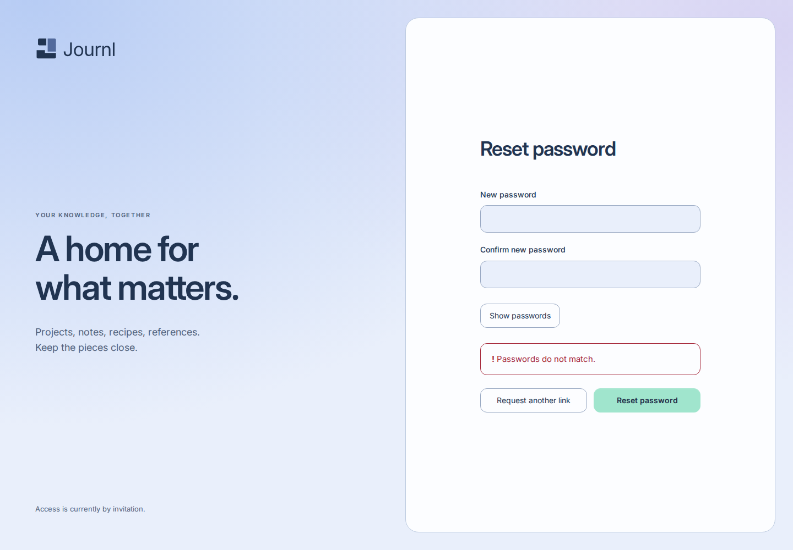
SHA256 57bf4e2e92d00e1434e5b33b2a31179b85c0f81e7d793970d7a483c0734dd93c

SHA256 4c9405434b2ef361ceb2db15286a30b304a2bfdb615a1ebf1aa5a1ca595cfca8

SHA256 8158711d8a1d1f0d3c386e5befe04a6e76629929beba831e757cebd8a348744d

SHA256 a002cf1bb3a349a33d89b1fc1fc487ad67a844e9a496695ca9178fd88a797f12
Reset password · invalid-token
reset-invalid-tokenActions and implementation pointers
Journl · Show passwords · Request another link · Reset password
apps/web/src/components/auth/sign-in.tsxapps/web/src/components/auth/sign-up.tsxapps/web/src/components/auth/invite-code-form.tsxapps/web/src/components/auth/reset-password.tsxapps/web/src/components/auth/auth-view.tsxapps/web/src/components/auth/better-auth-provider.tsx

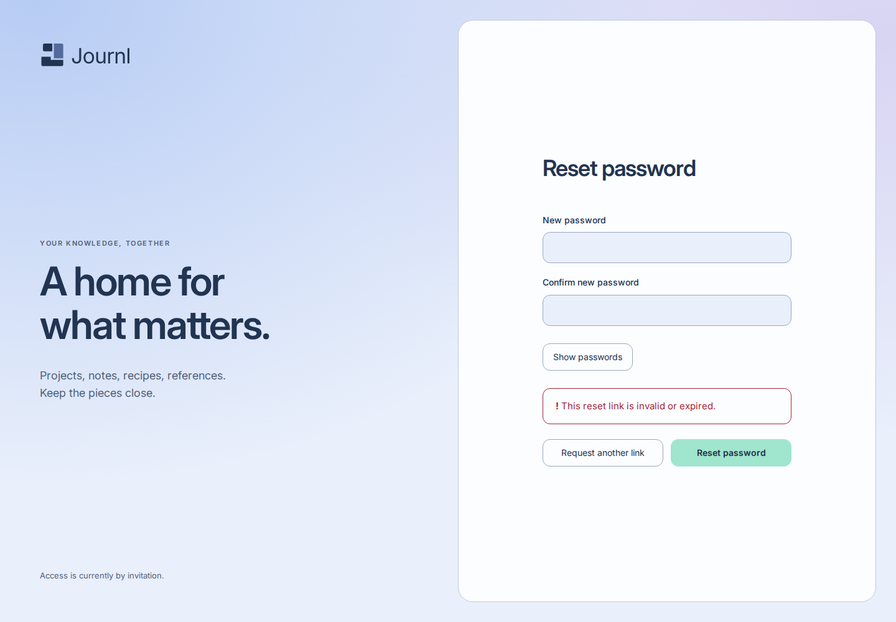
SHA256 631b178b8a7ffd7a44c9b167c41531dc54a6aae13865cdee63f31ce6cc090be7

SHA256 eda6bf3d2b99430c7af396c10a3a9808629d1bebac3882e9f289eb491e718262

SHA256 aac2ad90434ead1f4ccc8596481bd1b8bdd4c952ca40a9f73a5cf91213b7225f

SHA256 087d75f114ba2faf708d6b73434dad6b06a31fd4ef72bde85bc78642a20cd55e
Reset password · pending
reset-pendingActions and implementation pointers
Journl · Show passwords · Request another link · Reset password
apps/web/src/components/auth/sign-in.tsxapps/web/src/components/auth/sign-up.tsxapps/web/src/components/auth/invite-code-form.tsxapps/web/src/components/auth/reset-password.tsxapps/web/src/components/auth/auth-view.tsxapps/web/src/components/auth/better-auth-provider.tsx

SHA256 842589b76f2dd3e65c197822f710597f4972773f05f37382ab21bb6e60d3476b

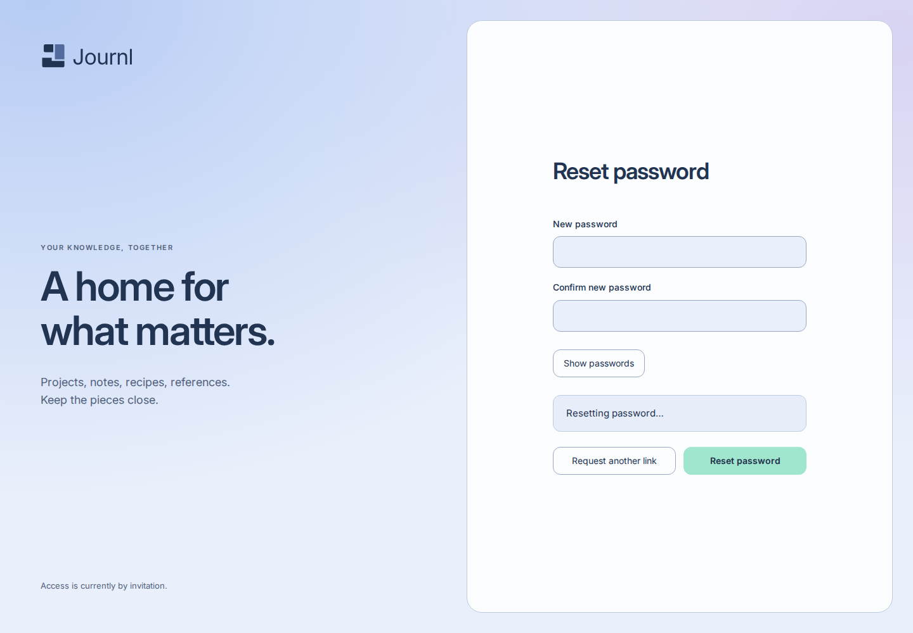
SHA256 d807f535e0aadd02b7023544675e1e53c342f4458990052ab8d970e0b5415997

SHA256 194658c1ee777811fbd570ada741f2e6ffd0b2d746503666f77ed5aabc25d0a1

SHA256 d4808d291207258619bdc65825ac662b53ba33cebaf066f008f9ddaace79a1c2
Reset password · error
reset-errorActions and implementation pointers
Journl · Show passwords · Request another link · Reset password
apps/web/src/components/auth/sign-in.tsxapps/web/src/components/auth/sign-up.tsxapps/web/src/components/auth/invite-code-form.tsxapps/web/src/components/auth/reset-password.tsxapps/web/src/components/auth/auth-view.tsxapps/web/src/components/auth/better-auth-provider.tsx

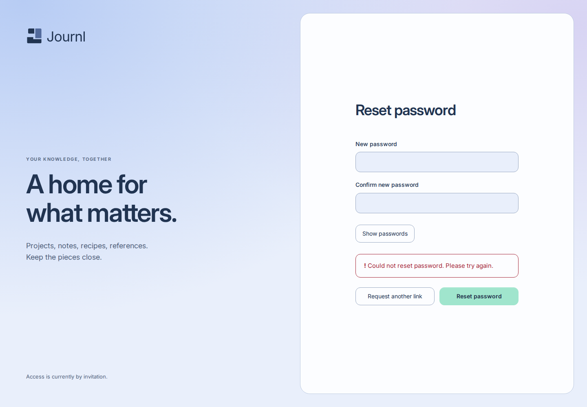
SHA256 bbc284d2f591a03a261cde71ba73ed30dc0542b5622995224a9b36fe86710f49

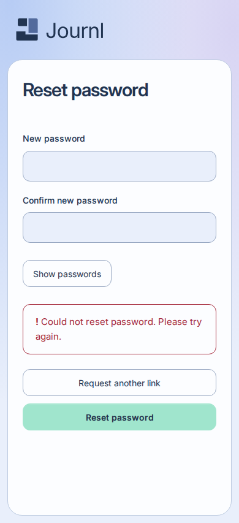
SHA256 462cb000eb9976ccedce38c29c46f6c80773081f2f4a613f7bbd8aa46df04fc9

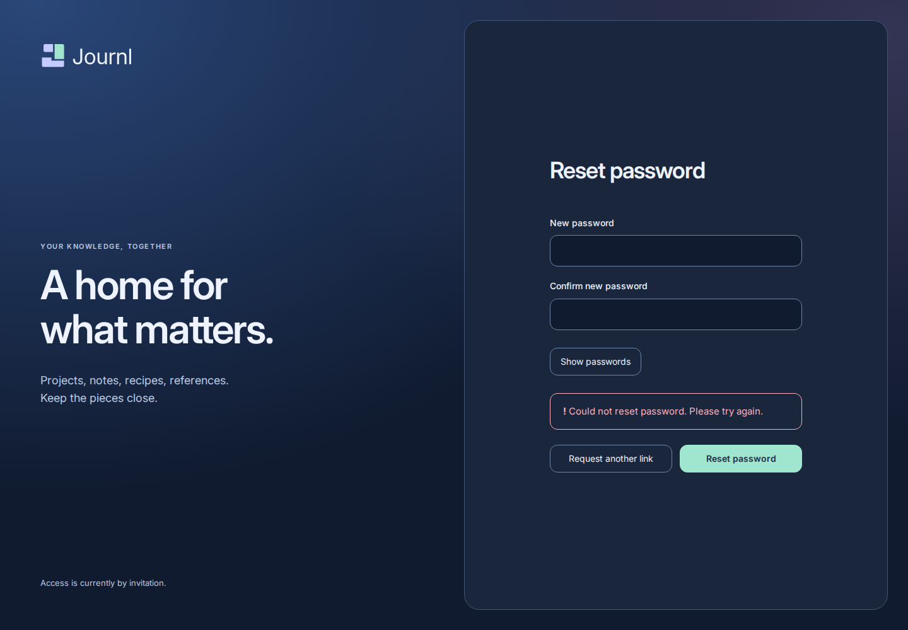
SHA256 5915c834a0c819243caf44d0201f5647dc0a29d30a2faa37a5adcd68435b7842

SHA256 a52e22645cc8e5f8f0d7ec3ba0877d3c96a520f4cdd65399922c303ec9228a0f
Reset password · confirmed
reset-confirmedActions and implementation pointers
Journl · Show passwords · Request another link · Sign in
apps/web/src/components/auth/sign-in.tsxapps/web/src/components/auth/sign-up.tsxapps/web/src/components/auth/invite-code-form.tsxapps/web/src/components/auth/reset-password.tsxapps/web/src/components/auth/auth-view.tsxapps/web/src/components/auth/better-auth-provider.tsx

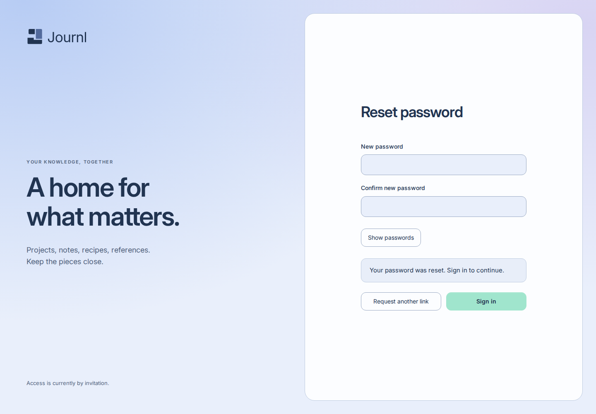
SHA256 0dc09bb6cb647022a64c724361b93e517c9249c852c4ffb1af8a9bbeb5a86e85

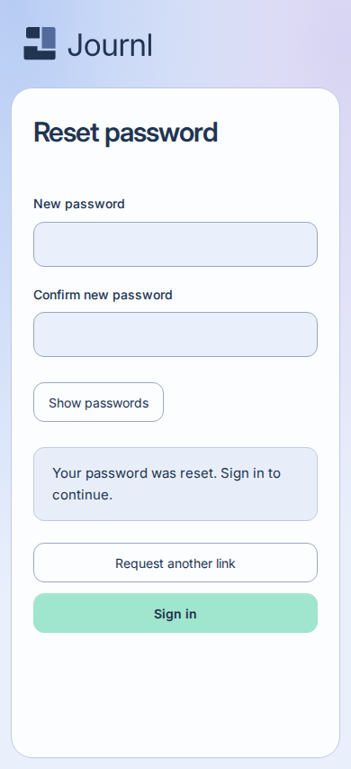
SHA256 9de07fd6c38246b1f1ca7e9b3d30a67cf47949301d4bfef8a662d22012ea1fce

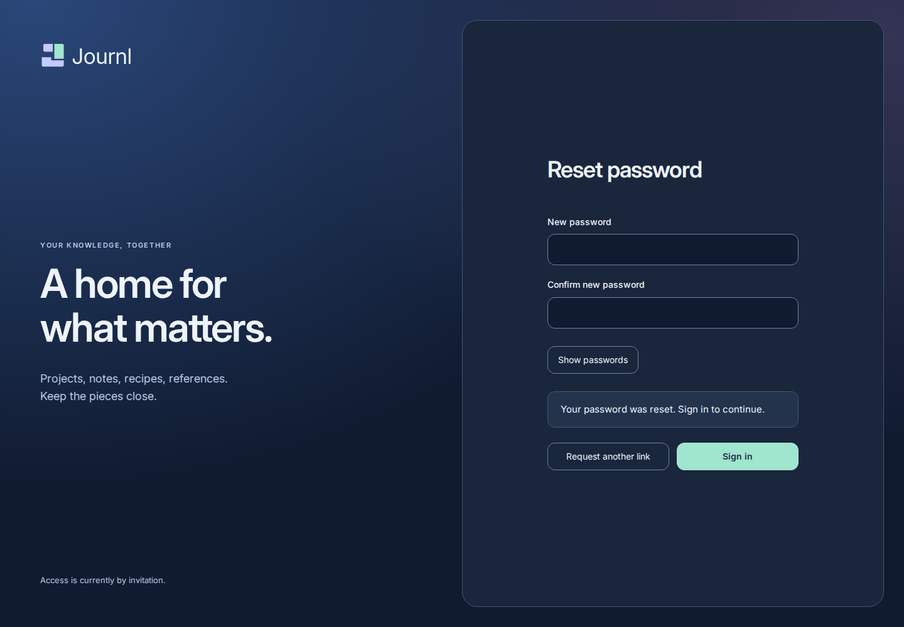
SHA256 27339f6e95c18549677c0fc2f3386ad4d5fc289113abd608e51e50f98a92c699

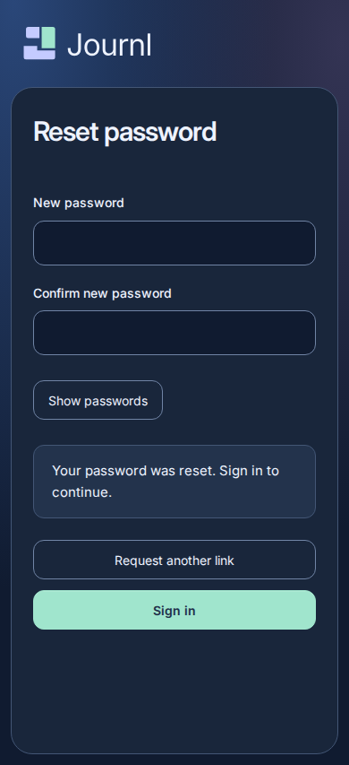
SHA256 702b1e5df727eeba1b59a434c2a0b6f4cd8697e48de7955681f75445e35a182f
Verify email · sending
verification-sendingActions and implementation pointers
Journl · Sign in · Resend email
apps/web/src/components/auth/sign-in.tsxapps/web/src/components/auth/sign-up.tsxapps/web/src/components/auth/invite-code-form.tsxapps/web/src/components/auth/reset-password.tsxapps/web/src/components/auth/auth-view.tsxapps/web/src/components/auth/better-auth-provider.tsx

SHA256 272ad1336e2ac40d46ff16e70bbefeceb9eb60e3828f0be1a17dbf977261ee00

SHA256 65b7c13835cdb7f6f827439fa690ca8e74e80f40d0b3b4ce19100349a5363bc6

SHA256 ca0b8c8fce94b1adfa5f4c09ff6b3c80780037cd5c1ff3e9b26c9ff3d70fe767

SHA256 aff989d5919377663a9164795d00626ec85f8b66ccedb4fcd4e5526b01104daf
Verify email · sent
verification-sentActions and implementation pointers
Journl · Sign in · Resend email
apps/web/src/components/auth/sign-in.tsxapps/web/src/components/auth/sign-up.tsxapps/web/src/components/auth/invite-code-form.tsxapps/web/src/components/auth/reset-password.tsxapps/web/src/components/auth/auth-view.tsxapps/web/src/components/auth/better-auth-provider.tsx

SHA256 daaf0beef3d95d92ddc40fcfaa191fb714bad47db94602fe233ee73a814e8bed

SHA256 7f17fc6de6faef9b297f3f34a3691dd63dab43ec0151f35181eaa49db2a7f57b

SHA256 f9fb056bc3d9ddf2ed6df1e2db27514f120722f34356ece75f0c5a16292f5738

SHA256 7cbb920c11f48911faffb56804cd3174dbae6b2d2703afc0f9095e1efbe0e9a3
Verify email · error
verification-errorActions and implementation pointers
Journl · Sign in · Resend email
apps/web/src/components/auth/sign-in.tsxapps/web/src/components/auth/sign-up.tsxapps/web/src/components/auth/invite-code-form.tsxapps/web/src/components/auth/reset-password.tsxapps/web/src/components/auth/auth-view.tsxapps/web/src/components/auth/better-auth-provider.tsx

SHA256 44cd68d695491f1b39f3ff36c9c8397be58406748e19608f1ba4ee9a60e481c8

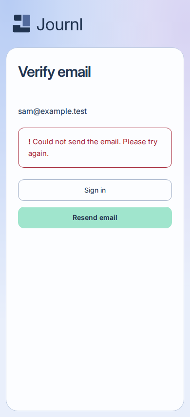
SHA256 5d6165a445db94aba34b7c4dd81dc1c89c43aff2cf6577c74bf742781a1bfbc8

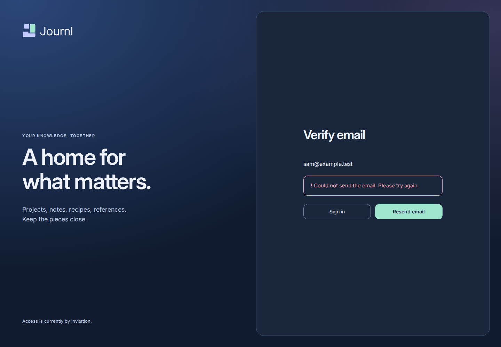
SHA256 da07af7fdd4d293a91bf5d0bd5daf1b688cf2e3af923c3f7d776f3d6e6775cae

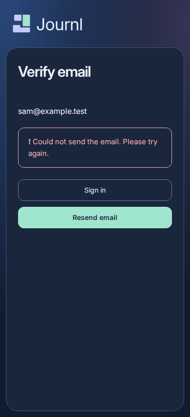
SHA256 3d562c939aa8bdab5d11ec81f27e774926993158fc6b74894158abc7f6227f83
Verify email · required
verification-requiredActions and implementation pointers
Journl · Sign in · Resend email
apps/web/src/components/auth/sign-in.tsxapps/web/src/components/auth/sign-up.tsxapps/web/src/components/auth/invite-code-form.tsxapps/web/src/components/auth/reset-password.tsxapps/web/src/components/auth/auth-view.tsxapps/web/src/components/auth/better-auth-provider.tsx

SHA256 4c605bff38864fdfad4c4d08c4a7a83ae34831dfa1cb1e7918646f7c698a2f80

SHA256 19f33bee1bb36b33e0accbc5986395ff5e337c273ce9278d34535e3c82e6375d

SHA256 ae1d99e3e1280d151d04a9719be1577870e1c57e7c1ff6a46f4a6cf8d4981faa

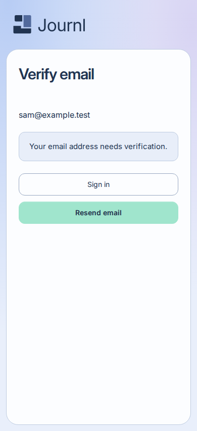
SHA256 e2f2ef8e50fbe8c4682921510120b929fbfaa225d4c642e2a10004be007e3dca
Sign out · pending
signout-pendingActions and implementation pointers
Journl · Return home · Try again
apps/web/src/components/auth/sign-in.tsxapps/web/src/components/auth/sign-up.tsxapps/web/src/components/auth/invite-code-form.tsxapps/web/src/components/auth/reset-password.tsx

SHA256 d778701e155757be51159dc42450cf164656b2b7a1cf7e1e6fabcf269ca2c3cc

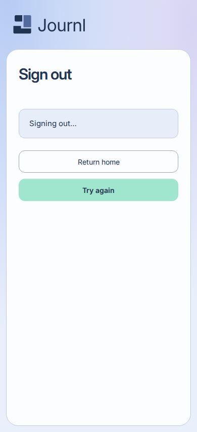
SHA256 d88fafde143a76d1ba73b0510a5b7be19e19474b5c38930fae0ddf8712eed44f

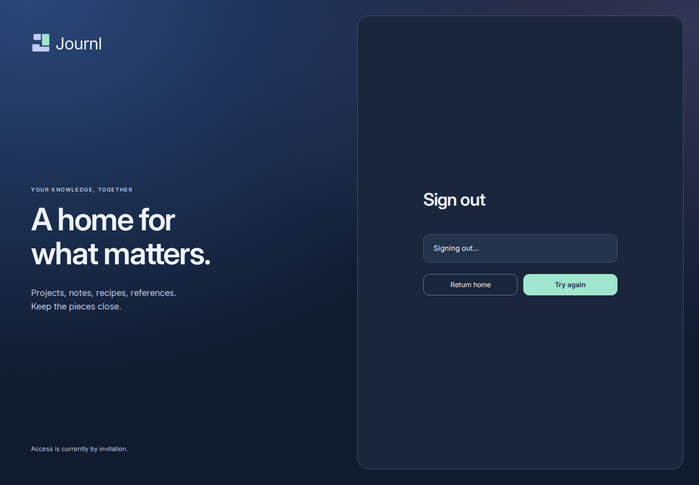
SHA256 ff0af84366fb0035f40709a842a127a6f058580b1d9b99ff131e36b54f863cc7

SHA256 cef0d1ef7b17165c63950f1eb7cfe7bc71969dfbefb437641884f93004a533a6